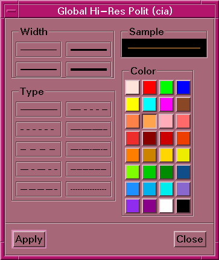

GARP Line Attributes

This dialog allows you to change the attributes of a line. The type
of line being changed is listed in the title bar of the window (a map line
in the example pictured above). The user can change the line width,
type, or color by clicking the appropriate button on the dialog. The current
appearance of the line will appear in the Sample box. Pressing the Apply
button will save the current line attributes for whatever is currently
controlling the dialog.